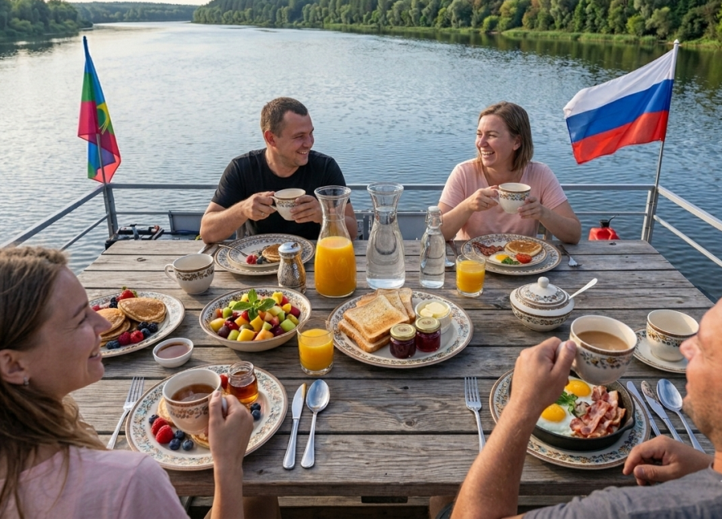

🍳 Завтрак · таймер внутри · обновлено 08.10.2026
Речной скрэмбл за 15 минут: завтрак на плоту с пошаговым таймером
Нежные яйца, копчёный судак из бортовой коптильни и укроп с берега. Включите таймер — он сам проведёт вас по шести шагам, просигналит между ними и не даст пересушить скрэмбл даже на качающейся палубе.

Живое фото гостей · сезон 2026
Так выглядит завтрак на плоту: скрэмбл, кофе и рассвет над Доном с верхней палубы
Ингредиенты: выберите порции
База — 4 порции. Цифры пересчитаются мгновенно.
- Яйца8 шт
- Сливки 10%100 мл
- Масло сливочное30 г
- Судак копчёный (из коптильни плота)150 г
- Помидоры черри100 г
- Укроп свежий1 пучок
- Хлеб для гренок4 ломтика
- Соль, чёрный перецпо вкусу
Нет копчёной рыбы? Замените на вчерашний улов с ужина или солёную щуку — скрэмбл стерпит всё.
Пошаговый таймер: 15 минут до завтрака
Нажмите «Старт» — таймер сам переключит шаги, просигналит и подсветит текущий. Звук можно отключить кнопкой рядом.
Шаг 1 из 6
02:00
Подготовка
всего прошло: 00:00 из 15:00
Совет: ставьте сковороду на доску-подставку — на качающейся палубе так спокойнее.
Подготовка · 2 мин
Разбейте яйца в миску, влейте сливки, посолите и слегка взбейте вилкой — без фанатизма, пузырьки не нужны.
Сковорода и масло · 2 мин
Распустите сливочное масло на среднем жаре. Шипение должно быть ласковым: сильное масло сгорит и даст горечь.
Яйца на огне · 4 мин
Влейте яйца и непрерывно водите лопаткой по дну, собирая мягкие складки. Скрэмбл готовится медленнее, чем кажется — это норма.
Добавки · 3 мин
Введите копчёного судака кусочками и черри половинками. Перемешайте и дайте рыбе отдать дым яйцам.
Отдых под крышкой · 2 мин
Снимите сковороду с огня чуть раньше полной готовности: остаточное тепло доведёт скрэмбл сам. Накройте крышкой.
Подача · 2 мин
Тёплые тарелки, щедрая щепоть укропа, поджаренный хлеб и кофе с видом на Дон. Завтрак-легенда готов.
Советы шефа: готовим на качающейся палубе
Сковорода с высокими бортами
На волне скрэмбл «гуляет»: высокие борта спасут и блюдо, и плиту.
Соль — в конце
Посолите яйца заранее — скрэмбл даст сок и станет резиновым. Солите на тарелке.
Рыба из коптильни
Коптите судака с вечера: утром останется разобрать на кусочки — и завтрак собирается сам.
Завтрак с видом на Дон
Плот, коптильня и рассвет — уже в цене
Забронируйте сплав: продукты привезите свои или закажите набор к посадке, а скрэмбл приготовите под присмотром капитана — он тоже любит этот рецепт.